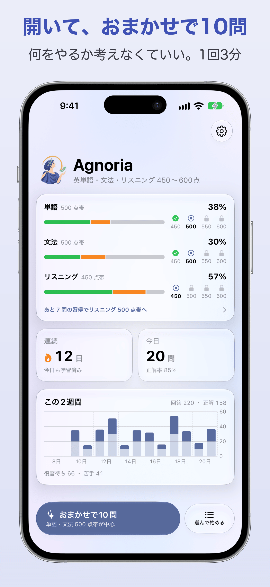
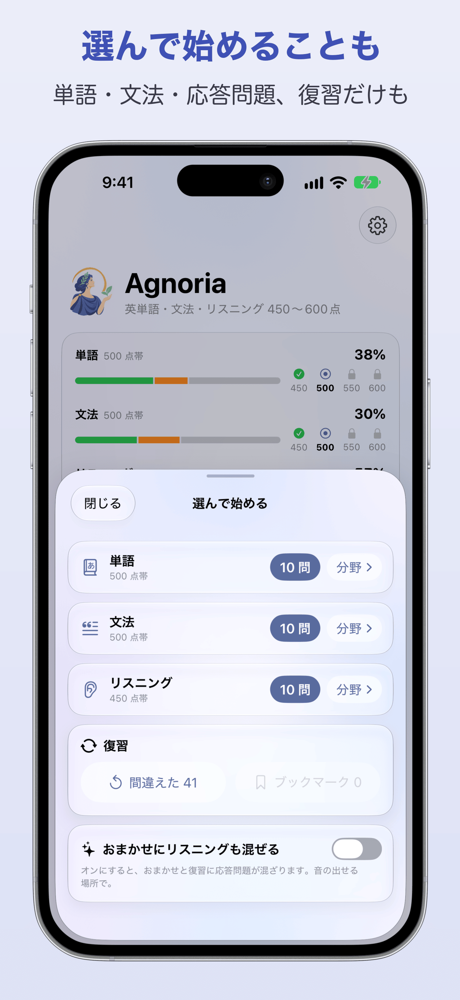
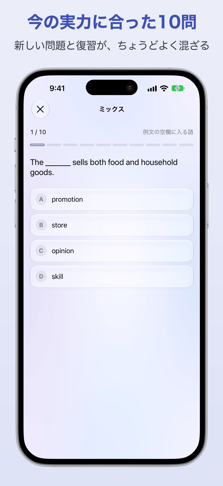
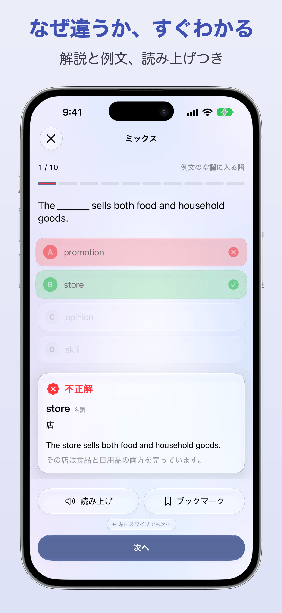
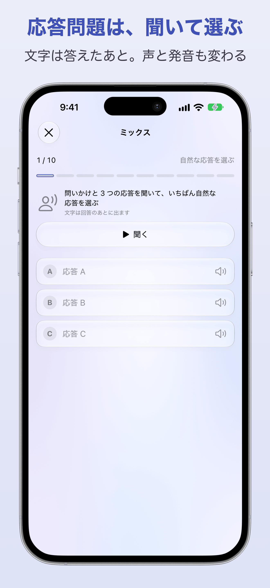
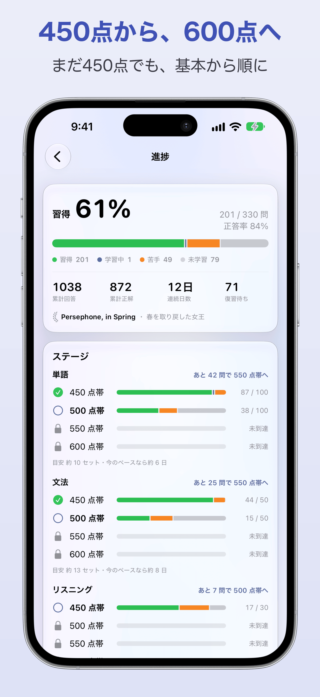

Agnoria（アグノリア）の紹介文と画像です。記事やレビューで自由にお使いください。画像はそのまま、または切り抜いて掲載できます。
| 名前 | Agnoria（アグノリア） |
|---|---|
| 種類 | 教育 / 英語学習（TOEIC L&R 450〜600 点帯向けのドリル） |
| 対応 | iPhone・iPad（iOS / iPadOS 27 以上）。日本語 |
| 価格 | 無料。広告なし、課金なし、アカウント登録なし |
| 公開 | 2026 年 10 月 16 日（1.0）。1.3 で応答問題を追加 |
| 開発 | Shigeru Sawada（個人開発） |
| App Store | https://apps.apple.com/jp/app/id6823061416 |
| 公式サイト | https://sawasige.github.io/agnoria/ |
| ソース | https://github.com/sawasige/agnoria |
| 連絡先 | GitHub Issues |
単語帳や問題集が続かなかった人のための英語ドリル。開いて「おまかせで10問」を押すだけ、1 回 3 分。TOEIC L&R の 450 点帯の基本から 600 点へ順に進む。単語・文法・応答問題を収録。広告なし、無料。
Agnoria（アグノリア）は、単語帳や問題集が続かなかった人のための英語ドリルです。開いて「おまかせで10問」を押すだけで、まだ答えていない問題・間違えた問題・しばらく解いていない問題を今の実力に合わせて混ぜて出します。1 回 3 分。TOEIC L&R が初めての人、まだ 450 点に届いていない人向けに、450 点帯の基本語彙と基本文法から始め、450・500・550・600 のスコア帯を単語・文法・応答問題それぞれで順に進みます。収録はビジネス英語の単語 400 語、Part 5 形式の文法 200 問、Part 2 形式の応答問題 120 問（端末の合成音声で出題）。学習の記録は iCloud で同期。Apple Intelligence 対応端末では解説の言い換えと類題の生成も。広告なし、課金なし、登録なし。
クリックで元のサイズを開きます。スクリーンショットは iPhone 17 Pro Max（1320×2868）。「枠なし」はキャプションと端末の枠が無い素の画面です。






キービジュアル（女神 Agenoria）: 3:2（3840×2560）と 21:9（3840×1646）。
ギリシャ語の Agnoia（無知）と、ローマの女神 Agenoria（子どもに学ぶ力を授ける）から。「無知から学び始める」の意。
TOEIC は ETS の登録商標です。本アプリは ETS および IIBC とは関係ありません。